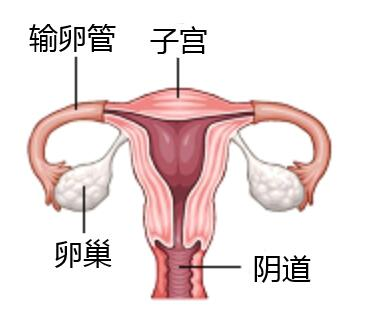
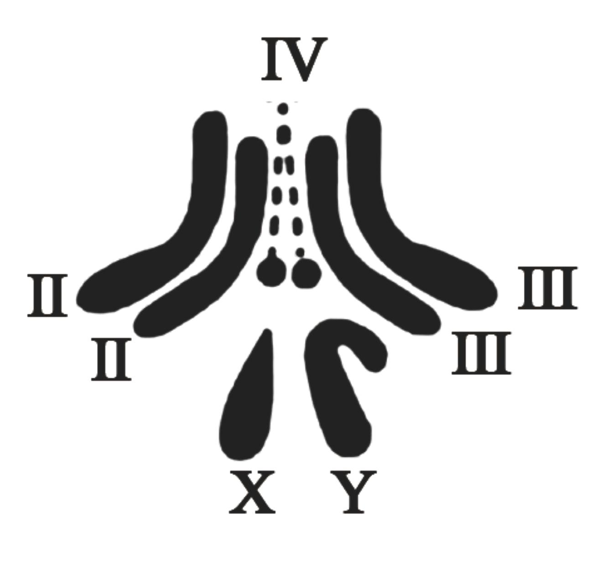

2023年北京市中考生物真题 · 选择题 第16、17、18、19、20题 · 对应解析
16. 下列动物行为中属于学习行为的是（ ）
A. 蜘蛛结网B. 青蛙冬眠C. 警犬搜救D. 孔雀开屏
【答案】C
【解析】
【分析】（1）先天性行为是动物生来就有的，由动物体内的遗传物质决定的行为，是动物的一种本能，不会丧失。（2）学习行为是动物出生后，在动物的成长过程中，在遗传物质的基础上，通过生活经验和学习逐渐建立起来的新的行为。
【详解】ABD．蜘蛛结网、青蛙冬眠、孔雀开屏都是由动物体内的遗传物质所决定的先天性行为，ABD不符合题意。
C．警犬搜救是动物出生后通过生活经验和“学习”逐渐建立起来的新的学习行为，C符合题意。
故选C。
17. 人类精子与卵细胞结合成受精卵的场所是（ ）
A. 卵巢B. 输卵管C. 子宫D. 胎盘
【答案】B
【解析】
【分析】女性的生殖系统的组成：

【详解】女性的生殖系统主要包括卵巢、输卵管、子宫、阴道等。卵巢是女性的主要性器官，也是女性的性腺，能够产生卵细胞和分泌雌性激素；输卵管能输送卵细胞，是受精和胚胎初期发育的场所；子宫是胚胎和胎儿发育及产生月经的场所；阴道是精子进入和胎儿产出的通道。
故选B。
18. 为选育再生稻新品种，我国航天员将再生稻种子带入太空。该育种方式是希望通过射线和微重力等因素的作用，从根本上改变再生稻（ ）
A. 细胞的分裂方式B. 种子的营养物质
C. 细胞的遗传物质D. 种子的形态结构
【答案】C
【解析】
【分析】太空育种即航天育种，也称空间诱变育种，是将作物种子或诱变材料搭乘返回式卫星送到太空，利用太空特殊的环境诱变作用，使种子产生变异，再返回地面培育作物新品种的育种新技术。
【详解】太空育种主要是通过强辐射，微重力和高真空等太空综合环境因素诱发植物种子的遗传物质发生变异。细胞的分裂方式主要受到遗传因素和环境因素的调控，种子的营养物质主要由母体植物提供，并且在种子形成过程中已经确定，基因控制性状。遗传物质改变可能影响种子的形态结构，因此，太空育种方式是从根本上改变再生稻细胞的遗传物质，C正确。
故选C。
19. 果蝇是遗传学研究中的模式生物，其性别决定方式与人的相同。下图为某果蝇体细胞中染色体组成图，相关叙述正确的是（ ）

A. 染色体主要由DNA和蛋白质组成B. 果蝇体细胞中有3对染色体
C. 该果蝇为雌性个体D. 该果蝇只产生一种生殖细胞
【答案】A
【解析】
【分析】由于果蝇性别决定方式与人基本相同，果蝇的体细胞内染色体也分为常染色体和性染色体。因此果蝇的体细胞中共有8条染色体，其中3对称为常染色体，第4对称为性染色体，性别主要是由性染色体决定的，雄性体细胞中的一对性染色体组成是XY，雌性体细胞中的一对性染色体组成是XX。
【详解】A．染色体是由DNA和蛋白质两种物质组成，染色体主要存在于细胞核中，DNA是主要的遗传物质，故A正确。
B．果蝇体细胞内的染色体是4对，染色体组成是3对+XY，生殖细胞中的4条染色体，故B错误。
C．根据题意和图示分析可知：图示表示果蝇的染色体组成图解，图中两条性染色体大小不同，因此该果蝇表示雄果蝇，其染色体组成可以表示为3对常染色体+XY，故C错误。
D．在亲代的生殖细胞形成过程中，两条性染色体彼此分离，雄果蝇产生两种类型的精子，含X染色体的精子和含Y染色体的精子，染色体组成为3条+X或3条+Y；雌果蝇则只产一种含X染色体的卵细胞，染色体组成为3条+X，故D错误。
故选A。
20. 秋冬季节易发生流行性感冒，下列预防措施不合理的是（ ）
A. 始终紧闭门窗可以保护易感人群B. 佩戴口罩可以切断传播途径
C. 尽量避免聚集可以减少感染机会D. 锻炼身体可以提高抗病能力
【答案】A
【解析】
【分析】预防传染病的措施有控制传染源、切断传播途径、保护易感人群。
【详解】A．流感期间始终紧闭门窗造成空气不流通，更容易滋生细菌和病毒，A错误。
B．佩戴口罩可以阻断流感，属于切断传播途径，B正确。
C．流感期间尽量避免聚集可以减少感染的机会，C正确。
D． 锻炼身体可以提高抗病能力，属于保护易感人群，D正确。
故选A。